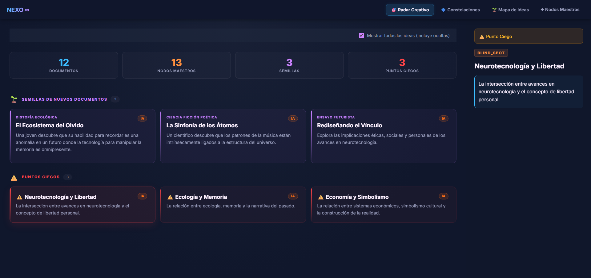
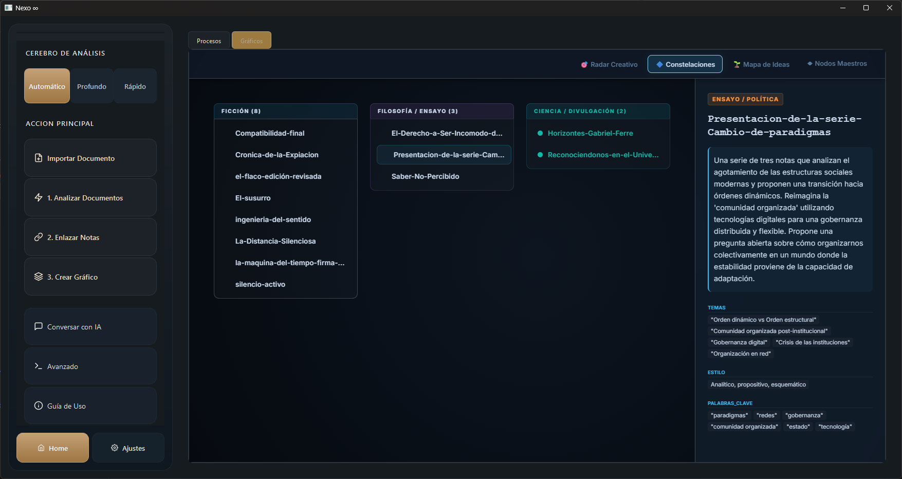
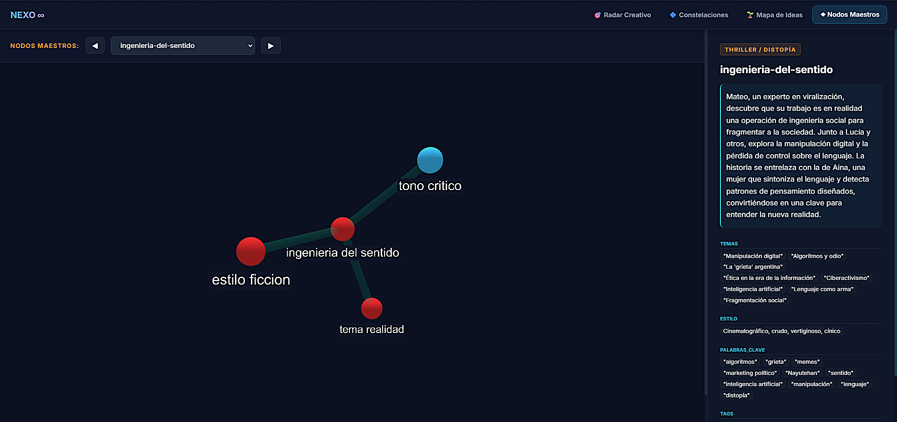

Understand at a glance which provider is working and how efficient its response is, optimizing your workflow.
Define your name and library theme (Literature, Technical, Research) to personalize the Dashboard.
The system detects the presence of Obsidian, an essential requirement to render your knowledge graph.
The Vault is automatically created in Documents/Nexo and necessary plugins are installed.
API key linkage for the Hybrid AI Ecosystem. The system lights up when ready.
Deep Brain
Primary engine for mass analysis and deep audit of long documents (Large Context 128k).
Get Access →Open the .env file in the Nexo root and replace the values:
SAMBANOVA_API_KEY=your_key
GROQ_API_KEY=your_key
OPENROUTER_API_KEY=your_keyToken savings through binary signatures and semantic similarity before using AI.
Role assignment: Massive Ingestion (OpenRouter), Precision (SambaNova), and Chat (Groq).
Short texts are processed locally with zero latency. Long docs generate Seeds and Blind Spots.
Nexo: Analyze note— Sends the active note to the enrichment pipeline.Nexo: Search MemAtoms— Retrieves semantic memories linked to cursor position.Nexo: Check status— Verifies the connection with the local server.
Copy vault_template/.obsidian/plugins/nexo-bridge/ to your vault (requires Obsidian 0.15.0+).
Endpoints at localhost:8000:
/status— Server status/analyze— Analyze note/mematoms— Search memories/ask— Cognitive chat
The Bridge status is shown in the Nexo status bar. Green = active connection. If red, verify that port 8000 is free and that Nexo is running.

If you repeat a query, Nexo delivers the answer instantly without token consumption thanks to local storage of semantic findings.
- 🎯 Radar: Projected ideas dashboard.
- 🔷 Constellations: Grouping by genres.


- 🌱 Map: Interactive concentric graph.
- ◆ Hubs: Focus on themes and network connections.


Every important finding is saved as a "MemAtom." If a piece of data is irrelevant, the Zero Filter automatically discards it to avoid noise.
The system applies "exponential forgetting" to what you don't use. Recurring themes are merged into deep Wisdom Notes.
Activate idle mode for the AI to elevate the quality of your old documents, searching for deep themes while you're not using the application.

Visualize findings in green and knowledge gaps in red to audit your logic before writing.
Ideas born in the web viewer materialize as editable nodes within your Obsidian laboratory.


Use the "Import Files" button. The system will prompt you to select the documents and assign the Thinking Space (Topic) where they should be stored.
Nexo instantly converts the file to .md format, injecting a YAML frontmatter with the tag ai_status: raw (indicating it has not yet been analyzed).
Run the "Analyze Documents" process. The AI pipeline will take these raw documents and extract their deep knowledge and MemAtoms.
Before using AI, the system verifies SHA-256 signatures and semantic similarity (ChromaDB >95%). Only genuinely new content will consume tokens.
Create as many topics as you need: Physics, History, Projects, Research... No limit. Each topic automatically generates its folder structure in your local library.
- Documents, cache, and vectors separated per topic.
- The 3D viewer shows a badge with the active topic.
- Analyze and export each topic independently.
Navigate to Side Menu → Advanced → Local Node Configuration. The system will audit your CPU/GPU and suggest the most efficient model to prevent bottlenecks.
Select a model (e.g. Llama 3, Mistral, Qwen) and press Download. The download and unpacking progress is streamed in real-time in the bottom terminal.
Once active, the Nexo router automatically prioritizes the Local Node for knowledge audits, applying an immediate switch without restarting (Hot-Reload).
7B models require a minimum of 8 GB RAM. 13B or higher models need 16 GB+. The panel will warn you if you try to load incompatible models.
Another process is occupying the Bridge port. On Windows run netstat -ano | findstr :8000 to identify the process and close it via Task Manager.
Verify Obsidian is installed. If auto-deployment failed, manually create the Documents/Nexo folder and restart Nexo.
Verify the Ollama service is running in the background. Run ollama list in your terminal to confirm available models.
The vector database lives at biblioteca/vectores/. If corrupted, delete that folder — Nexo will regenerate it automatically on the next analysis (documents are not lost).
Keys are configured in the .env file at the Nexo root. Ensure there are no extra spaces and that the key is active in the provider's portal.
If you change hardware (motherboard or system SSD), your Machine ID changes. Open a GitHub Issue with the subject "License Re-activation" to re-link your educational key.